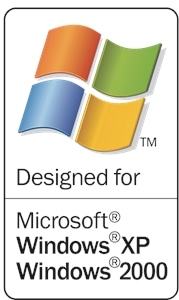
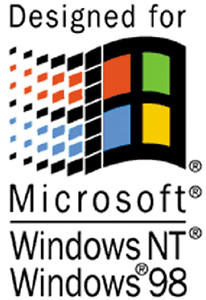
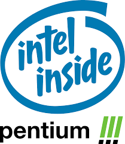

Welcome To My Site!!
About Me!
Hello, I'm zvqle, a (horrible) Programmer and Tech Enthusiest!
I enjoy messing with windows and its internels through programming
🇸🇴 🇺🇸
Knowledges!
I Mainly Program in C using either the Windows (or Native) API or Raylib if its Graphic Intensive
I also know a wee bit of web development (aka how i made this site)
I can also program in Rust and Golang (if im forced to)
Hobbies!
A Big Hobby of Mines is just reading about (non controversial) geopoitics stuff
I also know how to make flags and make maps too


